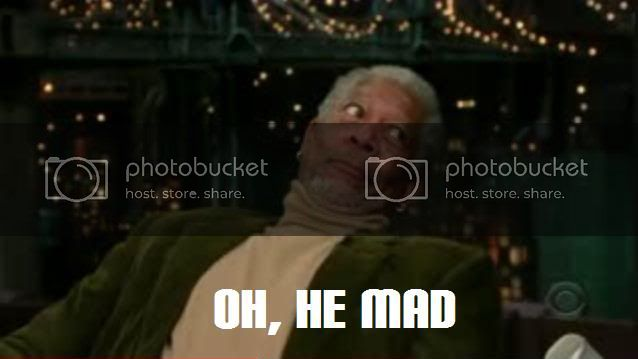

I was just telling him he’s a fucktard for using memes in an argument, not trying to strengthen my own.
They arent as fun when even though your carrying the team as spy, when someone at the bottom of the scoreboard complains of you not helping the team… happens to me all the time, same as sniper, straight up pisses me off. But as far as the engi being very op’d, they could very easily counter-act it imo with a spy weapon, like the sapper, but stronger, or maybe causes 300% damage from shots with the revolver, something along those lines.
Problem is then the turret would be fairly useless. I’m for finding a way to make the turret hard to use correctly.
TF2 does blow now… they should have kept it like it was when it originally released.
Yeah, the class-based multiplayer game that I bought no longer exists; I can never go back to it – it really sucks.
Just the other day I was in the mood for TF2, and I remembered what happened last time I tried to play. And what happened was:
People screaming on mic under the age of 9,
People constantly asking about trades,
People offering metal and shit,
OP weapons that I had never seen before confusing me,
random hats and outfits that make it hard to tell who my teammates are,
and finally, so much god damn lag on a single server due to massive amount of downloads and hats and effects; not to mention the population growth due to its being free.

failimage.
Honestly all I see in this thread is “wahh, this class is too strong”. Its honestly like you haven’t played the game in a long time. Whenever I play TF2 I never run into any of the imbalances that you describe. Engineers being too powerful? That’s laughable, since an uber Heavy or a Demoman with a sticky launcher can easily overcome a Sentry. And Pyros being overpowered? That’s laughable since they are just as easily destroyed as any other class. So my earlier post still stands. QQ. And I will make my arguments however I want to, memes or no memes.
Then you will not be treated seriously and be taken for the dumbass you are. Also it’s become apparant that you don’t notice the op shit assholes do because you ARE one of the assholes using op shit ie uber charged heavy. That’s not skill, that’s just someone who sucks enough ass and is willing to be bored enough to stand behind you for 10 minutes holding a button down. The only excusable time to use it would be to take out a sentry, otherwise you’re just an asshole.
You know what, perhaps rather than complaining about heavy and shit being op, it’s struck me that nearly ever class is op, so rather than calling them op, I should simply call the spy and sniper (sniper with the huntsman, IDGAF about his other weapons) under powered. Sure you can do really well witha spy, but it takes skill. Doing well with the heavy/medic/engie does not take skill. I guess the main problem here is that skill needed to operate a class properly is not proportional to the amount of kills/points you will get. Skill required to use an engie: none. Kills with an engie: TONS. Skill required to use the spy: a lot just to play passably, an insane amount to do extremely well. Kills with a well used spy: a medium to large amount depending on just how much of a BA you are.
Hmmmm, having a series of ephinanies here. You see, I play the spy and huntsman sniper because I like that badass feeling you get when you get a cool kill, not the cheap skilless feeling you get when you leave a turret somewhere and hide somewhere like a fucking pussy while it gets kills. The problem is TF2 is mostly oriented to the hiding pussies with no skill. The pussies like you dethklok walk around sayying hurrr durrrr teh over powered tactics aren’t overpowered while the skilled players looking for their skill to be rewarded get the short end of the stick. I tried the Heavy when I was first starting TF2. I went on a MASSIVE rampage without even trying. That’s when I never used the heavy again. It’s not fun when you are rewarded with massive killstreaks for your abuse of the bad game mechanics rather than your skill and finesse at using balanced game mechanics. It’s like the assholes who jumpin a PBR and spray from a distance in BFBC2 Nam. No skill, lots of kills. That’s not how gaming should be. People like that are what ruins the multiplayer community. Poor developers have to pick throught heir games witha fucking microscope just to make it harder for assholes to exploit the game. They’re just hackers who like to pretend their good so they don’t go as far as actual hacking.
This thread is about TF2 being unbalanced. You bitched about the engineer being overpowered. I said that it is balanced because there are simple counters. You whine and bitch about how all the classes except the spy and sniper are over powered. You must have played on some shitty servers, because every time I play the teams wind up balancing out to almost perfection. For every class there is a counter, for every weapon a counter, and for every strategy a counter. Sounds to me like you just wind up with shitty teams. And I honestly suck at TF2. My k/d ratio is barely 1/1 on by best matches, and I’m the guy on the team who switches classes every time I respawn because I suck at all of them. You think its easy to play the Heavy? Do you know how often I see Heavies get taken out by every other class? For Christ’s sake, I saw a Sniper beat a Heavy to death with the Kukri. The game is balanced, nothing is over powered, you just complain about everything.
OP what are you smoking god damnit
saying shit like engineer is overpowered is clearly a sign you play on 24/7 2fort servers jesus fuck
you obviously forgot that tf2 is a team based game, so you’ll have to grab your microphone and yell on people until someone goes medic, switch over to demoman, wait for the uber and go blast every shit the poor engineer has
and yes, engineers do that, they tend to protect the intel and CPs, their sentries are made to kill not to merely scare you off
skill less engineer, oh god i thought i heard everything but i was wrong
also the spy
yes of course it’s one of the weakest classes in tf2, it’s not made for front line combat, it’s made for getting behind your foes and stabbing them in the ass with the knife
with certain items there are more ways to infiltrate the enemy stronghold, and saying it’s the weakest class is just damn right retarded
TL;DR OP is a poor troll and a bad player, 3/10 for making me reply
I seriously don’t see why people like TF2, but that’s just my opinion.
You are amazingly thick, you know? Whiny, too. All your posts sound like are a combination of “whaa, I wasn’t good enough to take down a sentry in the flag room” and “I’ve never actually played the game”.
Being an Engineer takes no skill if the other team is shit. But, then, no skill is required for any class at that point. A good Engineer must do the following:
-
Pick a spot. This is far more difficult on some maps than others. You want to set up in a choke point so the enemy team has trouble getting past you, but it also has to be defensible. Needs to be a place you can check for spies from, which gets difficult if there’s an entrance behind where you’ll usually be looking. You want to be able to have a surprise on the line-of-sight, but avoid the kinds of corners that demos can exploit. Most of the time ideal conditions are impossible, so you have to optimize. And do it quick, because setup takes time.
-
Build. This is an exercise in strategy and resource management. You have a finite amount of metal, especially at the beginning of a round, so you have to pick the order of your builds and upgrades carefully. You must also make sure you have enough left over for any repairs that might come up, because anything less than instantly fixing any damage might mean your sentry goes down and that’s enough fire off the other team to get them onto the capture point.
-
Defend. This is much more complicated anywhere besides a dead-end like the 2Fort intel room. Always have to beware of spies. And contrary to what you might think, it’s not that hard to destroy a engie nest.
Cloak–> Disguise–> Hide–> Uncloak–> Approach nest–> Sapper on sentry–> Q to Ambassador–> headshot engie–> sapper all–> leave
Not exactly rocket science, even for beginners. I’ve gotten the intel on 2Fort through a nest in the room as a spy and carried it all the way back to base. Also contrary to what you believe, an engie requires teamwork with other classes to maintain a nest against a team with a halfway decent spy, or even a competent soldier with a Direct Hit. If you don’t have any backup when a spy starts sappin’ your sentry, it can be somewhere between rough and impossible to fend him off without dying or losing any buildings, assuming the spy isn’t complete shit. And don’t ever stray from your buildings for too long. They’re sturdy, but not too sturdy, so they’ll go down is you’re not attentive. Any engie who is intentionally away from their buildings for longer than a minute when it would make any difference if they went down is a bad engie. This is fact.
(Also, on a side note: spy’s not op? https://www.youtube.com/watch?v=eI1QwX5PNWA Bam. By your standards, the spy is op because it can pull this off.)
In all seriousness, if an engie has a good kill streak against your team, one of three things has happened:
-
The engie is cheating. Solution: VAC.
-
The engie has played well and set up in an optimal position. Considering how difficult this usually is, he deserves every kill he gets.
-
Your team, including you, is made up of shitty players. Solution: learn to play better.
Seriously, you are a shitty player who has had the misfortune to go up against other shitty players early on and much better players shortly after. This “massive rampage” you went on with the heavy only means that you either got stupid lucky or the other team was completely worthless. A skilled scout can take down a lone, unskilled heavy.
You’re also a scrub. Definition:
Certain behaviours mark out a player as a scrub. They will often complain that a specific card, combo or aspect of the game, such as land destruction or counter-magic, is “cheap” or unfair. In casual play they may go so far as to refuse to play against decks using a strategy they dislike, while in tournaments they may automatically concede at the first sign of such a deck. Scrubs also typically refuse to listen to advice from more experienced players over how to improve their deck, arguing that an objectively poor card choice or deck strategy is worthwhile. As a result, scrubs in tournament play are seen as an annoyance, although their lack of skill generally means they do not pose a threat to better players.
This is you. This is anyone like you who calls an Ubercharged heavy overpowered. Ubers have existed since the game first came out. If you think a core part of the game that’s been present from the outset is overpowered, you’re a scrub. It’s there, it’s always been there, and if you haven’t learned how to deal with it, see my above point about you being a shitty player.
You’re also a scrub because you insist that kill counts and k/d ratios make the game, and are upset that others get kills even though they don’t follow your rules. I don’t give a shit about my kdr. I care about having fun and winning the round; my kdr is irrelevant. But if you’re so concerned with how many kills you get versus how many kills the other team gets, I have some great advise for you: learn to play better. A high enough level of skill will trump cheap tricks every time, no exceptions.
If you can’t have fun because other people are doing better than you and they’re doing so by methods you insist are “cheap”, you’re a scrub and a child. Deal with it. I’ve had a Spy/Engie griefing team spawn-kill my team and I continuously on 2Fort, and I still had fun working my way out of it. Grow up, get better at the game, and be a better sport.
Finally, you really have no idea what you’re talking about if you’re seriously saying that people who metagame and exploit the rules of the system ruin multiplayer. That’s part of it: using the rules of the game to your advantage. Insisting otherwise is what makes you a scrub.
Also, take a look around sites for competitive Street Fighter play. You’ll find lots of talk about analyzing attack animations frame-by-frame to find the perfect moment to cancel out of them, and ways to exploit this for fast, hard-hitting combos. Metagamers are not pussies. They’re the competitive ones. They play harder and better then you can imagine, and they play to win. They’re also the ones developers watch the closest for making improvements and improving balance.
TL;DR lrn 2 play, scrub
I usually play as a sniper and do not think that any of the other classes is overpowered, I would almost say that the sniper is OP. One single headshot kills any other class, two or three shots destroy a sentry/dispenser without having to get into their range. The only thing he is not suited for is capturing (for obvious reasons), which the other classes are far better at, which in the end reinforces teamplay. I personally cannot complain about the balancing.
Weren’t you going to leave the forums, dawg?
Take this discussion to the Steam User’s Forum. This is getting frisky.
Stop whining about your incompetence like a little bitch and learn how to play the damn game properly. That’s all there is to it…
The fact that you play as a huntsman sniper and consider it to be a weapon that requires skill is an excellent contradiction to pretty much everything you’ve said.
‘Duhuhu i can spam arrows into crowd and get headshawt i am teh pro’[/SIZE]
Haha that was awesome
They have all disadvantages, you know that, right?
It’s fun. It has amazing support. And the comic style is what it differs from other MP-Shooters.
This
The huntsman requires a built-in exploit that increases the hitbox size, if that weren’t the case you’d have a hard time hitting people at medium to long range. I personally prefer playing as Pyro, and i hate it when a sniper headshots me because there is no way to even injure a sniper as easily as any other class can.
I’d have to say i hate soldiers and demomen the most though, soldiers now get rocket launchers with rockets so fast they’re almost impossible to reflect in time, and demomen can seemingly teleport their grenades around and home in on you.
Still, i usually get pretty high up on the scoreboard due to my suicidal gaming style, it’s the only way you can get any kills with the Pyro.